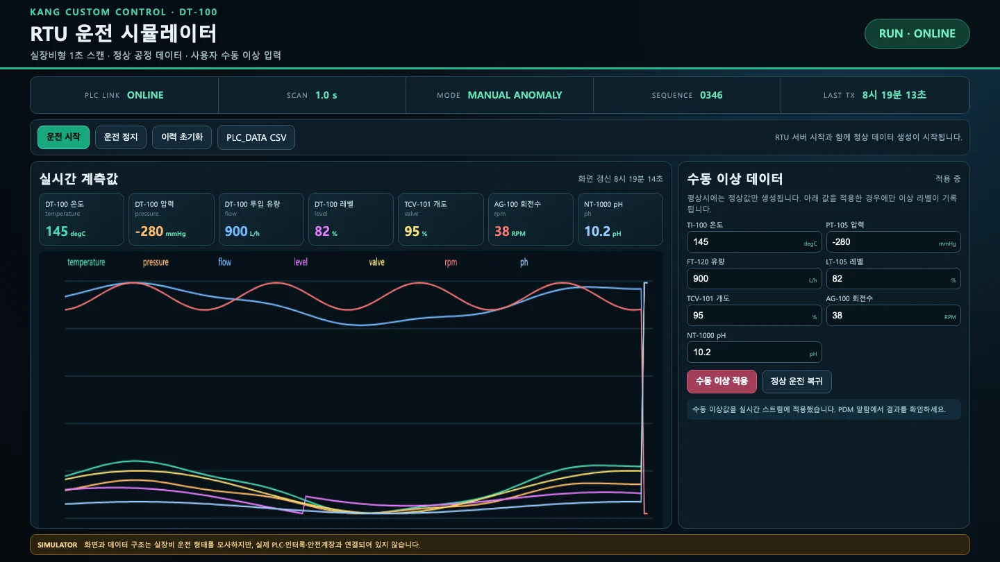
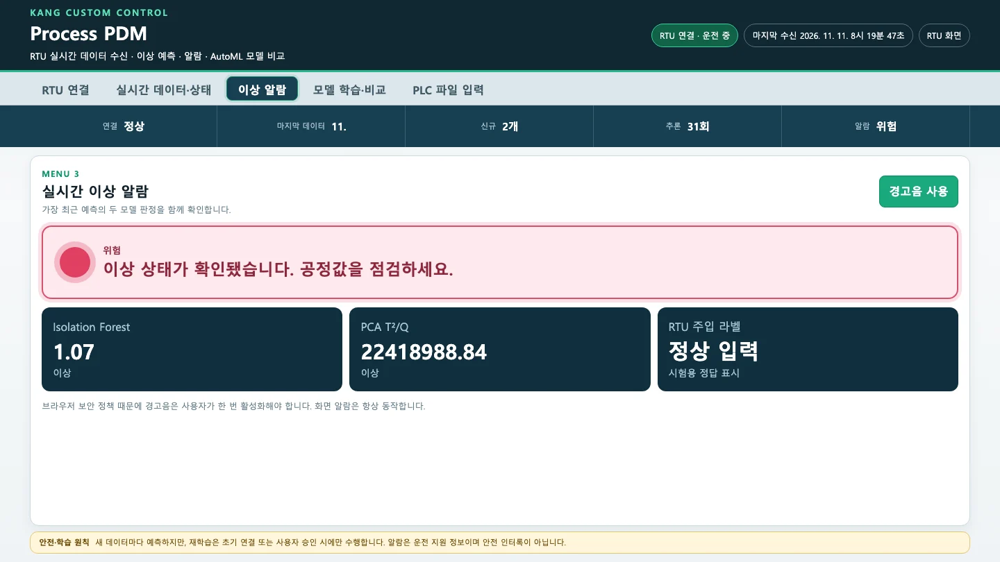
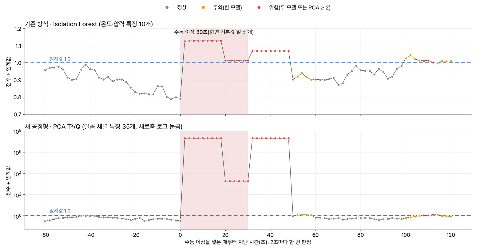

RTU의 「수동 이상 데이터」로 비정상 값을 넣고, PDM의 「이상 알람」에서 두 모델이 어떻게 판정하는지 봅니다. 화면 기본값 일곱 개를 넣으면 2초 만에 「위험」이 뜹니다. 하지만 값 하나만 바꾸어 보면 두 모델의 차이가 드러납니다. 기존 방식은 pH와 밸브를 보지 못하고, PCA는 값이 정상인데 멈춰 있기만 한 센서도 잡습니다.
무엇을 · 왜#
RTU는 평소에 정상값만 만듭니다. 「수동 이상 적용」을 누르면 그때부터 입력칸의 값을 그대로 상수로 내보내고, 그 시점들에 이상 라벨(label = 1)을 붙입니다. PDM은 이 라벨을 판정에 쓰지 않고 「RTU 주입 라벨 · 시험용 정답 표시」로만 보여 줍니다.
화면 코드는 PDM의 알람 단계를 다음과 같이 정합니다.
| 단계 | 조건 |
|---|---|
| 정상 | 두 모델 모두 1.0 이하 |
| 주의 | 한 모델만 1.0 초과 |
| 위험 | 두 모델 모두 1.0 초과, 또는 PCA 점수가 2.0 이상 |
화면 기본값은 모두 정상 범위를 크게 벗어나 있습니다.
| 채널 | 정상 범위 | 화면 기본값 |
|---|---|---|
| 온도 | 114.5 ~ 121.5 °C | 145 |
| 압력 | −555.5 ~ −514.5 mmHg | −280 |
| 투입 유량 | 1,992 ~ 2,248 L/h | 900 |
| 레벨 | 58.0 ~ 62.1 % | 82 |
| 밸브 개도 | 41 ~ 51 % | 95 |
| 회전수 | 60.5 ~ 63.5 RPM | 38 |
| pH | 7.07 ~ 7.23 | 10.2 |
따라 하기#
-
PDM이 RTU에 연결되어 있고 「실시간 자동 갱신」이 켜져 있는지 확인합니다(2장). 「이상 알람」 메뉴를 열어 둡니다. 소리를 들으려면 「경고음 사용」을 한 번 누릅니다. 브라우저 정책 때문에 사람이 한 번 눌러야 소리가 납니다.
-
RTU 화면 오른쪽의 「수동 이상 데이터」에서 기본값을 그대로 두고 수동 이상 적용을 누릅니다. 위쪽 줄의
MODE가MANUAL ANOMALY로, 오른쪽 위 상태가 「적용 중」으로 바뀝니다. 일곱 카드의 값이 입력값으로 고정되고, 그래프 끝이 수직으로 튑니다.
수동 이상을 적용한 RTU 화면. MODE MANUAL ANOMALY, 일곱 카드가 145·−280·900·82·95·38·10.2로 멈춤 「수동 이상 적용」은 RTU가 멈춰 있으면 운전도 다시 시작합니다.
-
PDM의 「이상 알람」을 봅니다. 이번 실행에서는 적용하고 3.1초 뒤에 화면이 「위험」으로 바뀌었습니다.
칸 값 Isolation Forest 1.13 · 이상 PCA T²/Q 20,019,526.12 · 이상 RTU 주입 라벨 수동 이상 이상 알람 메뉴의 위험 표시. Isolation Forest 1.13, PCA T²/Q 20019526.12, RTU 주입 라벨 수동 이상 두 숫자의 크기는 매우 다릅니다. 이 차이는 이상의 심각성이 아니라 점수를 만드는 방식에서 비롯됩니다. Isolation Forest의 점수는 「몇 번 나눠야 따로 떨어지는가」에서 나오므로 상한이 있습니다. 재생 실행에서 임계값은 원점수 0.578이었고, 이상일 때 점수는 그 1.13배까지만 올라갔습니다. PCA의 T²와 Q는 표준화한 특징의 제곱 거리라서 한계가 없습니다. 값이 멈추면 표준편차·기울기 같은 특징이 학습 때 본 적 없는 0이 됩니다. 그 결과 거리가 수천만 배로 커집니다.
-
30초쯤 뒤 RTU에서 정상 운전 복귀를 누릅니다. 값은 바로 정상 파형으로 돌아오지만, PDM은 약 16~18초 동안 「위험」을 유지합니다. 아래 화면은 복귀하고 6초 뒤입니다. 라벨은 이미 「정상 입력」인데 두 모델 모두 이상입니다.

정상 운전 복귀 6초 뒤의 이상 알람. RTU 주입 라벨은 정상 입력인데 두 모델 모두 이상, 위험 20시점 창 때문입니다. 마지막 시점이 정상이어도 창 안의 앞쪽 19시점에 이상값이 남아 있습니다. 창에서 이상값이 완전히 빠져야 점수가 내려갑니다. KANG 판에서도 같은 「꼬리」가 있었습니다.
-
같은 실험을 2초 간격으로 기록하면 아래와 같습니다. 그림은 RTU를 1초씩 직접 진행시키며 화면과 같은 규칙으로 판정하는 재생 도구로 그렸습니다(프로그램 수정 없음).

수동 이상 30초 전후의 두 점수. 위는 Isolation Forest(0.7~1.2), 아래는 PCA T²/Q(로그 눈금). 이상을 넣자마자 두 점수가 임계값을 넘고, 20초쯤부터 낮아졌다가, 복귀 직후 다시 최고치로 올라 18초 뒤에 내려온다. 이상 전후의 정상 구간에도 주의·위험 점이 섞여 있다 세 가지가 보입니다.
- 변화가 창 안에 있을 때 점수가 가장 큽니다. 이상이 20초 넘게 이어져 창 전체가 같은 상수로 채워지면 두 점수가 내려갑니다(IF 1.01, PCA 1,827). 그래도 임계값보다는 높습니다. 복귀한 뒤 18초 동안은 창에 「이상 → 정상」 변화가 들어 있어 다시 최고치로 오릅니다.
- 이상이 없는 구간에도 주의·위험이 있습니다. 그림의 −44초, +50~58초, +100~120초가 그렇습니다. 5장에서 원인과 해결 방법을 다룹니다.
- 두 모델의 판정이 늘 같지는 않습니다. +52~58초에는 PCA(T²)만, +100~106초에는 Isolation Forest만 1.0을 넘었습니다.
한 변수만 바꿔 보기#
교육 자료(PPT 10쪽)는 「한 번에 한 변수만 바꾼 뒤 여러 변수를 함께 바꿔 보라」고 권합니다. 그런데 화면의 「수동 이상 적용」은 입력칸 일곱 개를 모두 보냅니다. 값 하나만 바꾸고 나머지에 정상값을 적어도, 그 여섯 값도 상수로 고정됩니다. 정확히 한 채널만 바꾸려면 RTU API에 바꿀 채널만 보냅니다. 보내지 않은 채널은 정상 파형을 계속 따릅니다.
# pH 하나만 10.2 로(나머지 여섯 채널은 정상 파형 그대로)
curl -X POST http://127.0.0.1:8776/api/manual -H 'Content-Type: application/json' \
-d '{"enabled": true, "values": {"ph": 10.2}}'
# 정상 운전 복귀
curl -X POST http://127.0.0.1:8776/api/manual -H 'Content-Type: application/json' \
-d '{"enabled": false, "values": {}}'
연결하고 10분 뒤 60초 동안 이상을 넣어 비교했습니다(재생 도구, 2초마다 판정 30번).
| 넣은 값 | 기존 방식(IF) 첫 이상 | IF 최대 점수 | PCA 첫 이상 | PCA 최대 점수 | 알람 단계 |
|---|---|---|---|---|---|
| 화면 기본값 일곱 개(30초) | 2초 | 1.13 | 2초 | 20,921,375 | 위험 100% |
| pH만 10.2 | 끝까지 없음 | 0.97 | 2초 | 1,706,323 | 위험 100% |
| 밸브만 95% | 끝까지 없음 | 0.97 | 2초 | 102,712 | 위험 100% |
| 온도만 125 °C | 6초 | 1.05 | 2초 | 1,173 | 주의·위험 90% |
| 압력만 −280 mmHg | 4초 | 1.05 | 2초 | 69,932 | 위험 100% |
| pH만 7.15(정상값)로 고정 | 끝까지 없음 | 0.97 | 2초 | 338 | 주의·위험 100% |
| 화면처럼: pH 10.2 + 나머지 여섯은 정상 평균값으로 고정 | 20초 | 1.05 | 2초 | 1,708,567 | 위험 100% |
결과에서 주목할 점은 세 가지입니다.
- 기존 방식은 pH와 밸브를 보지 못합니다. 입력이 온도·압력뿐이기 때문입니다. pH만, 밸브만 바꾼 실험에서 IF 점수는 평소처럼 0.97 근처에 머물렀습니다. 화학 공정에서 이 두 값이 중요하다면, 기존 방식만으로는 그 이상을 놓칩니다.
- PCA는 멈춘 센서를 잡습니다. pH를 정상값인 7.15로 고정하기만 했는데도 PCA는 2초 만에 이상으로 판정했습니다(최대 338). 값의 크기가 아니라 「흔들림이 사라진 것」(표준편차·기울기 0)을 본 것입니다. 현장에서 계기가 멈추거나 통신이 끊겨 마지막 값이 반복될 때 유용한 특성입니다.
- 화면으로 하는 실험에는 「멈춤」이 늘 섞입니다. 화면에서 pH만 바꾸면 나머지 여섯 채널도 멈춥니다. 그래서 기존 방식도 20초 뒤에는 이상을 잡았습니다(온도·압력이 멈췄기 때문입니다). 「한 변수」 실험은 위의
curl로 해야 정확합니다.
잡음 없는 사인파라서 더 쉽게 잡힙니다
RTU의 정상 신호에는 잡음이 없습니다. 그래서 값이 멈추는 순간 표준편차가 정확히 0이 되고, 학습 때 본 범위와 크게 어긋납니다. 실제 계기에는 잡음이 있어 정상과 이상이 이렇게 뚜렷하게 구분되지 않습니다. 이 수치를 현장 탐지 성능으로 해석하면 안 됩니다.
확인 문제#
-
RTU API로 밸브 개도만 95%로 바꿨습니다. 「이상 알람」의 Isolation Forest 칸이 계속 0.97 「정상」입니다. 프로그램이 고장 난 건가요?
정답
아닙니다. 기존 방식 재현 모델은 온도·압력 채널(특징 10개)만 입력으로 받습니다. 밸브 채널은 아예 보지 않습니다. 밸브 이상은 일곱 채널을 모두 보는 PCA T²/Q가 잡습니다(이번 실험에서 2초).
-
「정상 운전 복귀」를 눌렀는데 16~18초 동안 「위험」이 이어졌습니다. 왜 그런가요? 이 시간을 줄이면 무엇을 잃나요?
정답
특징을 최근 20시점 창으로 계산하므로, 복귀한 뒤에도 창 안에 이상값이 남아 있는 동안은 점수가 높습니다. 창을 줄이면 꼬리는 짧아집니다. 대신 평균·표준편차·기울기를 더 적은 점으로 계산하므로 정상적인 변동에도 점수가 크게 흔들려 헛알람이 늘 수 있습니다. 창 크기는 측정 간격과 이상이 지속되는 시간을 고려해 정해야 합니다(배포본 화면에서는 20으로 고정입니다).
-
pH를 정상값(7.15)으로 고정만 했는데 PCA가 이상이라고 했습니다. 헛알람인가요?
정답
값의 크기로는 정상이지만, 정상 운전에서는 pH가 늘 조금씩 움직이므로 「전혀 움직이지 않는 pH」는 평소와 다른 상태입니다. 계기 고착이나 통신 끊김으로 마지막 값이 반복되는 상황이라면 잡아야 할 이상입니다. 다만 RTU 데이터에 잡음이 없어 실제보다 훨씬 쉽게 잡혔다는 점도 함께 기억해야 합니다.